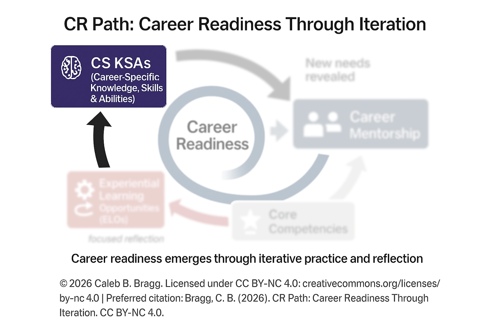
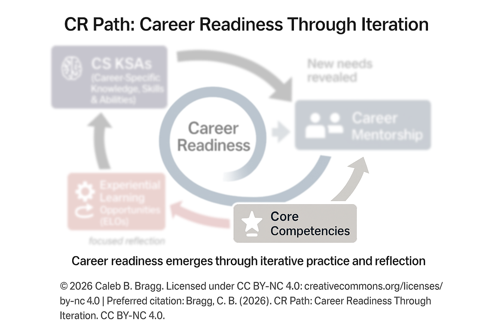
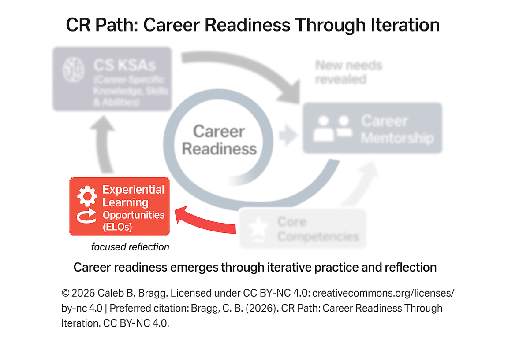
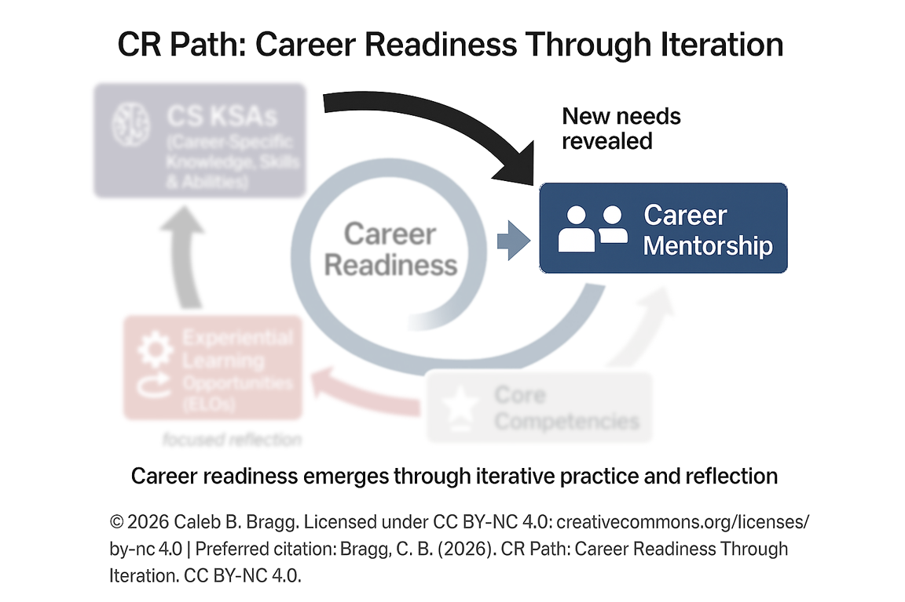
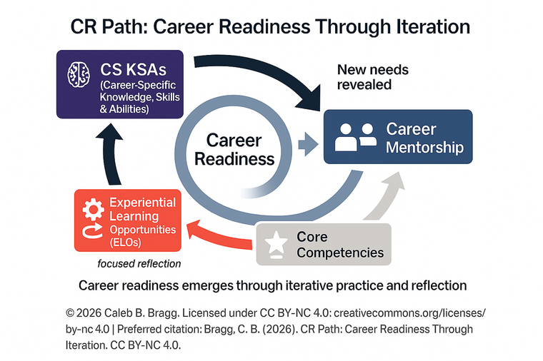

The CR Path
"Where Are You Now -- and Where Are You Going?"
Supervisor Demo
This is a walkthrough copy of the exact module students complete. Nothing you type or click is saved or sent anywhere — no LMS, no Qualtrics, no email, no browser storage. The 24-hour gate between Part A and Part B is removed, and the sidebar can jump to any page. The page-1 question below and the "Your last answer" panels are what a returning student sees.
View the module empty, or pre-filled with Devon Ellis — an illustrative composite student, not a real person. His first pass is a sophomore's first contact with the module; his junior year pass shows the same student two years and several returns later. Flip between them on any page with the toggle at the bottom right — the difference between the two passes is the module's argument.
💾 Your work here gets saved — and travels with you
This module saves your progress as you go. When you finish Part A, you can copy a Resume Link that carries your answers and your 24-hour timer to any other device, and the confirmation email you receive after Part A carries the same link. At the end of Part B, Copy My Responses as Text puts a labeled copy of everything you wrote on your clipboard, and Print / Save gives you the same record as a sheet or PDF. Use them: you will come back to the CR Path as you gain new experiences, and your earlier answers are how you will see your own growth.
Estimated Time
Part A: 25-30 min
Part B: 25-30 min
Part B unlocks 24 hours after Part A
Format
Asynchronous (LMS). Mobile-friendly. All videos captioned.
What You'll Need
Just yourself and honest answers. No preparation required.
What You'll Produce
A CR Path Map and a Baseline Reflection. You'll return to update both as you gain new experiences.
By the end of Module 0, you will be able to:
- Define each of the four CR Path components in your own words
- Locate yourself on the CR Path cycle based on your current experiences
- Connect at least one academic experience to a specific CR Path component
- Identify one area of the cycle that needs the most development
- Articulate a first-draft answer to: "How does your degree prepare you for a career?"
This module is designed to be returned to. Your first pass builds the map. Each time you come back with a new experience -- a course, a project, a mentor conversation, a micro-internship -- your map gets richer and your story gets stronger.
Is this your first time walking the CR Path?
Returning? Your earlier answers are shown above each box once you get there. If they aren't, paste them in from your saved copy or email as you go.
Pass 1 complete (submitted )
Come back when you have a new experience to add. Starting the next pass keeps your map, your details, and your email, and asks you to answer the reflection questions fresh -- your last answers stay visible above each box.
Welcome & Hook
~4 minutes
Video: Introduction to the CR Path (1 min) | Transcript available below
"If an employer asked you right now: 'What did you learn from your degree, and how does it prepare you for this job?' -- what would you say?
If that question makes you even a little uncomfortable, you're in exactly the right place. And if you already have a great answer -- perfect, because by the end of this module, you're going to have an even better one.
Here's something worth knowing: employers are increasingly hiring based on skills -- not just your GPA, not just your major, not just the name of your school. They want to know what you can actually do. And that means your job -- starting now, not senior year -- is to be able to tell that story clearly.
The CR Path is the framework that helps you do that."
Your Starting Point
~2 minutes
Your Starting Point
Why this matters: This is your "before." Each time you return with a new experience, you'll see how much your answer has changed.
Why this matters: This is pass 2. Answer without rereading your last one first -- the distance between the two is the point.
That employer question was intense. Let's start simpler:
Same question as last time, asked fresh:
Unscored baseline -- just be honest. You'll compare this to your updated answer when you return.
Unscored. When you're done, open "Your last answer" above and read the two side by side.
Introducing the Career Readiness Pathway Framework
~3 minutes
"Everything you do in college -- your courses, your jobs, your mentors, your experiences -- fits together. The CR Path shows you how."
CR Path: Career Readiness Through Iteration. (c) 2026 Caleb B. Bragg. CC BY-NC 4.0
The CR Path has four components that work together in an iterative cycle. Together, they help you understand what you're learning, name the skills you're building, and tell the story of how your degree prepares you for what comes next. Over the next few pages, we'll explore each component. Later in this module, you'll map your own experiences onto the cycle.
The Framework
~8 minutes
"Career readiness isn't a destination you arrive at on graduation day. It's something that builds every time you move through this cycle."

CR Path: Career Readiness Through Iteration. (c) 2026 Caleb B. Bragg. CC BY-NC 4.0
Component 1: CS KSAs
Career-Specific Knowledge, Skills & Abilities
What it is: Your domain foundation -- the content you learn specifically in your major courses.
In plain language: "This is what I know because I studied [my field] specifically."
- Psychology: Research methods, data analysis, understanding human behavior
- Business: Financial modeling, market analysis, supply chain management
- Nursing: Patient assessment, clinical protocols, pharmacology
- Engineering: Programming languages, CAD design, circuit analysis
- Education: Lesson planning, classroom management, differentiated instruction
The Framework

CR Path: Career Readiness Through Iteration. (c) 2026 Caleb B. Bragg. CC BY-NC 4.0
Component 2: Core Competencies
Transferable Skills That Belong to Every Career
What it is: Eight competencies every employer looks for -- regardless of your field.
In plain language: "These are the skills that travel with me no matter what career I enter."
Click any competency to learn more:
The Framework

CR Path: Career Readiness Through Iteration. (c) 2026 Caleb B. Bragg. CC BY-NC 4.0
Component 3: ELOs
Experiential Learning Opportunities
What it is: Where your knowledge becomes skill -- internships, research labs, service learning, jobs, volunteer work, leadership roles.
In plain language: "This is where I actually used what I know in a real situation."
The critical addition: Focused reflection. Experience alone doesn't make you career ready. Understanding what you learned from that experience -- and being able to explain it -- that's what makes the difference.
The Framework

CR Path: Career Readiness Through Iteration. (c) 2026 Caleb B. Bragg. CC BY-NC 4.0
Component 4: Career Mentorship
Contextualizes Experience and Reveals What's Next
What it is: A person (or people) doing something you want to do -- or something close to it -- who helps you see what's next.
In plain language: "This person shows me what my skills look like in the real world, right now."
Important: You don't need a formal "mentor." A professor who talks about their career path. A supervisor who gives you real feedback. A family contact in an interesting field. Any of those count.
Name It to Claim It
Why this matters: If you can't explain it simply, you don't own it yet. When you return, you'll rewrite these -- and notice how much sharper they get.
Why this matters: This is the drift check. Define each one again without looking, then compare to your last answer.
You've now seen all four components. Put each one in your own words -- one sentence, no jargon. How would you explain it to a friend who's never heard of the CR Path?
One sentence each, no jargon, no peeking. If a definition got shorter and clearer since last time, that's ownership.
Unscored -- there's no perfect answer. The point is retrieval, not performance.
Why Is It a Cycle?
Because career readiness doesn't happen once. Every time you go around -- learning something new, applying it, reflecting on it, and getting guidance -- you come back stronger, more articulate, and more prepared.
You're already somewhere on this cycle. The next section helps you figure out where.
Note: We taught the components in this order (1-2-3-4) because it builds understanding. But the cycle doesn't have a fixed starting point -- you might enter at ELOs, circle back to CS KSAs, and then seek Career Mentorship. The numbers are labels, not steps. Your path through the cycle is your own.
Where Do You Fit?
~10 minutes
"Your year at Central might predict where you are on this cycle -- or it might not. A senior who has never had an internship might rank ELOs lowest. A first-year who worked full-time before enrolling might rank them highest. Trust your own assessment."
Component Strength Sort
Why this matters: This helps you and your supervisor know where to focus your development. When you return, you'll re-rank and see how your experiences have shifted the balance.
Why this matters: Re-rank based on what you have now, not on what you ranked before. What moved is your evidence of growth; what didn't is your next priority.
Rank the four CR Path components from strongest (1) to most in need of development (4):
About You
About You
This information helps us understand how students across Central experience the CR Path. It does not affect your module content.
A Note on Entry Points
- If you're early in your major: You're building your CS KSA foundation right now. Every class is adding to this cycle. Your goal this year is to understand the map.
- If you have some coursework but limited real-world experience: You've got enough foundation to start testing it. Look for opportunities to put your skills in motion.
- If you've done internships, research, or significant work: You have experiences to talk about and questions worth asking. Now is the time to find someone doing what you want to do.
- If you're approaching graduation: You've been around this cycle. The work now is naming what you've built -- in your resume, in interviews, in the room.
- If you're a transfer student or returning adult learner: Your work and life experience are real CS KSAs and ELOs. Your task is translation -- connecting what you already know to this framework.
These examples show how different students enter the CR Path based on their experiences.
Having trouble viewing? Open in a new tab.
Review Before Submitting
Where should your confirmation go?
When you submit Part A, you'll get an email with the day and time Part B unlocks and a link that reopens this module with your answers on any device. After Part B, the same address gets your complete CR Path record.
🔗 Coming back on a different device?
Your work is saved in this browser, and the email above will carry a resume link. If you'd rather have the link now, copy it here and keep it in your notes.
Before you submit Part A, review what you've entered:
You can go back and edit any response using the Back button.
Your Starting Point (Section 0.0)
Name It to Claim It (Section 0.1)
Component Strength Sort (Section 0.2)
Strongest -- Your Explanation
Least Developed -- Your Explanation
About You
Part A Complete
Part A Complete
You now have the vocabulary and your self-assessment. Part B will ask you to apply the framework to your own degree and experiences.
The spacing is intentional -- it gives the framework time to settle before you use it.
Part B unlocks in:
--:--:--
Part B unlocks --.
That's the minimum spacing. You can close this window and come back anytime after that. Check your email -- your Part A confirmation has the same time and a link that reopens this module on any device.
Coming back on a different device or browser? Paste this link there and your Part A answers and timer come with you.
Part B is ready!
Click Next to continue.
Your Degree Through the CR Path
~12 minutes
📌 Before you start Part B
On the review page at the end, three buttons matter: Copy My Responses as Text (a labeled copy of everything you wrote, ready to paste into your notes or an email to yourself), Print / Save Your Responses (the same record as a sheet or PDF), and Copy My Resume Link (carries your saved work to any device). Use at least one before you submit — it is how you bring this work with you the next time you return to the CR Path.

"The CR Path isn't a psychology framework. It isn't a business framework or a nursing framework. It works for every major at Central. The four components look different depending on your field -- but they're all there."
Examples by School
Select your school to see examples relevant to your major. Then you'll build your own map on the next page.
Undeclared or exploring? Look at two or three schools that interest you -- you'll start to see which examples resonate.
Carol A. Ammon College of Liberal Arts & Social Sciences
Psychological Science, Communication, English, History, Political Science, Sociology, Criminal Justice, Art, Music, Philosophy, Languages, Geography, Anthropology, Interdisciplinary Studies
| Component | Example | What a student might say |
|---|---|---|
| CS KSA | Research methods course; rhetorical analysis paper; GIS mapping project | "I learned how to design a study and run stats in SPSS -- I can actually analyze survey data now" |
| Core Competency | Navigating cross-cultural perspectives in community fieldwork; evaluating sources for bias in a policy brief | "I did fieldwork in a neighborhood that wasn't mine. I had to listen more than I talked and check my assumptions." |
| ELO | Research assistant position; nonprofit internship; service-learning placement | "I coded interview transcripts for a professor's research project over a whole semester" |
| Career Mentorship | Professor who discusses career paths; supervisor at internship; alumna in social work | "My internship supervisor helped me understand what entry-level jobs actually look like in this field" |
School of Business
Accounting, Finance, Management, Marketing, Economics, Business Data Analytics, International Business
| Component | Example | What a student might say |
|---|---|---|
| CS KSA | Financial modeling project; marketing campaign analysis; SQL database queries | "I built a financial projection spreadsheet -- I can work with formulas and present the results" |
| Core Competency | Managing interpersonal conflict under deadline on a consulting team; presenting to non-finance stakeholders | "Two of us wanted completely different approaches and we had 48 hours. I had to find the overlap and propose a hybrid -- professionally." |
| ELO | Accounting internship; Small Business Development Center project; consulting competition | "I did a 200-hour internship at an accounting firm -- I helped prepare actual financial statements" |
| Career Mentorship | Alumni mentor from Business School network; internship supervisor; professional contact from class speaker | "A CFO from the alumni network met with me twice and told me what he wished he'd done differently early on" |
School of Education
Elementary Education, Secondary Education, Special Education, Physical Education, Early Childhood Education
| Component | Example | What a student might say |
|---|---|---|
| CS KSA | Lesson planning; differentiated instruction; assessment design; child development theory | "I can design a week-long unit plan aligned to state standards and adapt it for different learning levels" |
| Core Competency | Demonstrating dependability across a 15-week placement; adapting communication for parent conferences | "My cooperating teacher expected me to be prepared and accountable every single day -- no excuses." |
| ELO | Student teaching placement; field experience hours; tutoring center | "I was the lead teacher for two sections of 4th grade ELA for 15 weeks straight" |
| Career Mentorship | Cooperating teacher; field supervisor; school administrator observed during placement | "My cooperating teacher met with me every Friday to review what went well and what I should change" |
College of Health & Rehabilitation Sciences
Nursing, Exercise Science, Physical Therapy, Public Health, Nutrition
| Component | Example | What a student might say |
|---|---|---|
| CS KSA | Patient assessment; SOAP notes; exercise prescription; nutritional analysis | "I can conduct a full patient health assessment and document it properly" |
| Core Competency | Coordinating care across disciplines in interprofessional simulation; maintaining HIPAA compliance | "In the interprofessional sim, I had to coordinate with nursing, PT, and dietetics students who each had their own priorities." |
| ELO | Clinical rotation; community health placement; hospital practicum | "I did 120 hours at Hartford Hospital working directly with patients under an RN's supervision" |
| Career Mentorship | Clinical preceptor; licensed professional during practicum; CCSU Health Sciences alumni | "My preceptor at the rehab facility helped me see what specialization options look like after licensure" |
School of Engineering, Science & Technology
Computer Science, Mechanical Engineering, Civil Engineering, Manufacturing Engineering Technology, Mathematics, Biology, Chemistry, Physics, Data Science
| Component | Example | What a student might say |
|---|---|---|
| CS KSA | Python programming; CAD design; lab data collection; statistical modeling; network security | "I wrote a Python script that cleaned a messy 10,000-row dataset -- cut processing time in half" |
| Core Competency | Learning an unfamiliar framework mid-project; peer code review as collaborative accountability | "Halfway through our capstone, we realized the original tool wouldn't scale. I had to teach myself a new framework in a week." |
| ELO | Co-op rotation; undergraduate research in science lab; hackathon; IT help desk | "I did a co-op at Pratt & Whitney -- worked on actual production engineering problems for six months" |
| Career Mentorship | Research faculty advisor; co-op supervisor; STEM alumni through ACM, ASCE, or IEEE | "My co-op supervisor still checks in with me about career stuff -- he recommended me for my next interview" |
Build Your Own Map
Build Your CR Path Map
Why this matters: This is your career readiness inventory. Each time you return with a new experience, you'll add to it -- and watch the gaps fill in.
Why this matters: Your last map is already here. Add what's new. Keep what still holds. Fix what was vague.
For each component, write: (1) your experience or course, (2) what you learned or gained, (3) in plain language, why might this matter to someone hiring you?
If a row feels empty -- that's important information, not a failure. That empty row is where your next experience should go.
Think about what you've actually learned to do in your major courses -- not just topics you've covered. Can you analyze data? Write for a specific professional audience? Design something? Diagnose a problem?
Think about any moment where you had to communicate something complex, work through a disagreement, lead something, meet a deadline under pressure, use software for a deliverable, or navigate different perspectives.
This does NOT have to be a formal internship. A part-time job counts. A leadership role in a club counts. Volunteering counts. A research project counts. If you're a transfer student or adult learner, your previous jobs count -- probably more than you think.
Have you ever had a professor talk about their career path? A supervisor who gave you real feedback? A family member in a field you're interested in? An advisor who helped you think through a decision? Any of those count. If this row is empty -- that's your first development goal.
Transfer Students & Adult Learners
If you came to Central with work experience, military service, caregiving, or previous study -- your prior experiences are real CR Path data. A job you held before returning to school is an ELO. A manager who shaped your approach is a Career Mentor. Skills from another field are CS KSAs. Don't start your map from zero. Start from where you actually are.
Your Baseline
~10 minutes
The Career Readiness Question
Why this matters: This is practice. Each time you come back with a new experience, you'll rewrite this -- and watch it get stronger, more specific, and more yours.
Why this matters: Rewrite it with your new evidence. Don't reread your last answer until you've finished -- then open it and compare.
Using what you've learned in this module, write a response to the following question as if you were answering it in an informational interview or advising appointment:
"How has your degree prepared you for your career -- or for the next step toward it?"
Reference at least two CR Path components in your response. You don't need to use technical language -- write the way you'd actually talk to someone.
How This Will Be Assessed
This is low-stakes -- completion is what matters most. But here's what we're looking for:
| Criterion | Not Yet (1) | Getting There (2) | Solid (3) |
|---|---|---|---|
| Names 2+ CR Path components | Neither referenced | One referenced | Both clearly named |
| Connects to specific experiences | No specific examples | Vague reference | Clear, specific example |
| Sounds like a real person talking | Overly formal or empty | Somewhat natural | Genuine and conversational |
Most students score "Getting There" on their first attempt -- that IS the expected baseline. The points for this activity are awarded for completion -- submitting a genuine, on-topic response that meets the word count. The rubric above is feedback to help you grow, not a grading formula.
The Iteration Cycle
~5 minutes
"You've just completed another pass around the CR Path -- and the comparison is the payoff. "You've just completed your first pass around the CR Path. This isn't the last time you'll be here. Every time you have a meaningful experience -- a course that clicks, a project that challenges you, a conversation that opens a door -- you'll come back and your map will grow."
What Counts as a CR Path Experience?
Any of the following is worth returning for -- because each one adds something to your map:
CS KSA Builders
A course where you learned a new technical skill. A project that required domain-specific knowledge.
e.g., "I just finished a stats course and can now run a regression."
Core Competency Moments
A situation that tested your communication, teamwork, leadership, or critical thinking under real pressure.
e.g., "I led a team presentation and had to navigate a conflict about our approach."
ELO Experiences
A micro-internship, a research project, a job, a volunteer role, a class project with a real client -- anywhere you applied what you know in a real setting.
e.g., "I completed a 40-hour micro-internship at a local nonprofit."
Career Mentorship Conversations
A coffee chat with an alum. An informational interview. A supervisor who gave you career advice. A professor who showed you what's possible.
e.g., "I had a 30-minute Zoom call with a CCSU alum working in my target field."
When You Return: How to Update Your Map
- Reopen this module. If you are on the same device and browser you used last time -- or inside the same Blackboard course -- your answers will still be here. If not, open your saved copy (the text you copied, the email, or the PDF) and paste each answer back into the field with the same label. The text copy is labeled in the same order as these pages, so this takes a couple of minutes.
- Navigate to your CR Path Map (Section 0.3) and add your new experience to the appropriate component row. Update what you wrote -- make it more specific, more confident, more real.
- Re-rank your Component Strength Sort (Section 0.2). Has anything shifted? Did your #4 move up? Did a new gap reveal itself?
- Rewrite your Baseline Reflection (Section 0.4). Answer the same question again with your new evidence. Watch how much stronger your answer is.
- Submit again. Each submission creates a new record -- so you (and your supervisor, advisor, or mentor) can see your growth over time.
Why This Works
Career readiness isn't a checkbox -- it's a practice. Each time you return to this map with a new experience, three things happen:
- Your map gets more specific. Vague entries become concrete, named skills.
- Your language gets more articulate. "I learned stuff" becomes "I can do X because of Y."
- Your gaps become priorities. Empty rows stop being embarrassing and start being action items.
This is what intentional career development looks like. Not a single moment of clarity -- a pattern of reflection that compounds over time.
Review Before Submitting
⚠️ Save a copy before you submit. Three ways below.
Copy My Responses as Text puts a labeled, plain-text copy of everything you wrote in Part A and Part B on your clipboard. Paste it into your notes, a document, or an email to yourself. This is the easiest one to bring back: when you return, you paste each answer into the field with the same label. Print / Save Your Responses gives you the same record as a printable sheet — choose “Save as PDF” to keep a digital copy. Copy My Resume Link puts a private link on your clipboard that carries your saved answers to another device or browser. You will return to the CR Path with new experiences — this is how your past self hands your work to your future self.
Before you submit, review what you've entered in Part B:
You can go back and edit any response using the Back button.
Your CR Path Map (Section 0.3)
Baseline Reflection (Section 0.4)
All three cover your complete Module 0 record, Part A and Part B. You’ll want it the next time you return to the CR Path.
Get a Copy of Your Responses
Your responses will be emailed to you automatically. You can also share your map with a supervisor, advisor, or mentor.
They'll get a copy of your map. A great conversation starter.
Module 0: Complete
Your first pass is done.Pass 2 is done.
Your responses have been saved. You've completed your first pass around the CR Path.
Your responses have been saved as a new record. Open your last pass and this one side by side -- the confirmation email has both if you used the same address.
Now go have an experience. Then come back.
Your Next Move
You don't need to wait for something big. Any of these count as your "come back" moment:
- You finish a course and learn a new skill
- You complete a class project with a real deliverable
- You start or finish a micro-internship
- You have a meaningful conversation with a mentor, alum, or supervisor
- You lead something -- even informally
- You practice a Core Competency under pressure and notice it
When that happens: Reopen this module. If your answers aren’t already here, paste them in from your saved copy. Update your map. Rewrite your reflection. Submit again. Watch your story grow.
Haven’t saved a copy yet? Do it now — you can’t come back to this page later.
Responses saved: 0
Part A completed: --
Part B completed: --